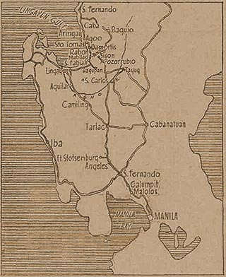

|
j
a v a s c r i p t |
January 20, 1945

The Road to Manila
Tribune: The Americans are "still pegged along narrow belt" in Lingayen. "Enemy indiscriminate bombings cause big fires in Baguio" — F6F2 and SB2Cs fired rockets at the city, and you can imagine the rest of the article. The strident cries are evidence of Japanese desperation. "Volunteer Labor System is Resumed in Manila; Army Stops Recruitment." Guinto and the military authorities reached some sort of agreement. "Public urged to resume normal occupations without fear of being recruited for work." Now the funny part: "The City of Manila will undertake the DUTY of supplying VOLUNTARY labor which the army may need for carrying out its various projects in the city" — most of which relate to defense, sabotage, or destruction of the city! "City Hall Opens Branch on North Side" — near Figueras' place. In fact, he arranged to have a detachment of the Metropolitan Constabulary under a Major Beltran assigned to the Burgos School below us — a case of safety first for Figueras. American planes were active east of Manila. We could hear but not see them — the roar being voluminous like angry thunder or a growl. A couple of planes ducked below the clouds to strafe Broadway in New Manila, the only street there with lots of trees — straight and easy to strafe too. I guess that's not a good place to hide trucks anymore. I heard a story that American paratroopers came down near Malolos and made contact with the guerrillas. Both groups proceeded to march to their first objective but had to turn back to restore order when looting broke out in the town! The Japanese wanted Santo Tomas vacated but the internees refused to go on the grounds that they had no homes to go to, no money, no food, and they felt it would be unsafe for them on the outside. They argued that since the Japanese took everything they owned, it is the responsibility of the Japanese to see them through until they are liberated. Meanwhile, I'm told that the Japanese have stopped feeding them, leading to much hardship. |
|
|
|
|